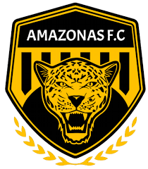
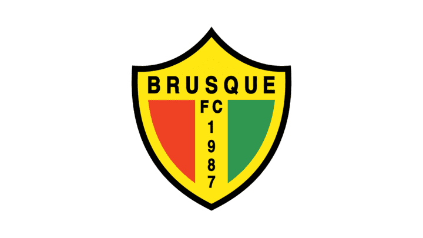
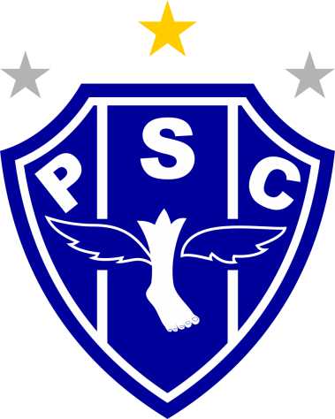
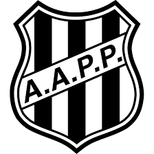

-
Amazonas
- 2019
Na zona leste o amarelo é tradição A forte onça é o mais novo campeão A tua garra e tua força no esporte Te faz temido e coroado o mais forte! Teu pavilhão são de feitos na história Os 11 heróis sempre dão sangue nos gramados Tuas conquistas se eternizam na memória Meu Amazonas, campeão predestinado! Dentro de campo és potente e imbatível Em vibração tua torcida é invencível A tua estrela é mais um título de glória Avante onça, o seu alento é a vitória Teu pavilhão são de feitos na história Os 11 heróis sempre dão sangue nos gramados Tuas conquistas se eternizam na memória Meu Amazonas, campeão predestinado Tu és o orgulho do esporte regional No Amazonas és temido, és imortal Pelos gramados do Brasil para vencer Eu estarei sempre contigo até morrer Teu pavilhão são de feitos na história Os 11 heróis sempre dão sangue nos gramados Tuas conquistas se eternizam na memória Meu Amazonas, campeão predestinado
-
América-MG
- 1912
Mantendo nosso espirito esportivo, social e cultural Vamos cantando o hino do América, tão famoso e tradicional E cantamos nossa música querida Vibrando com amor no coração Enaltecemos assim a nossa equipe, O nosso América, deca-campeão! As suas cores são alviverdes, Sua torcida feminina é demais! A tua classe aristocrata é o que fulmina os teus rivais América, és o maior! Teu futebol é sensacional! Cantamos para o mundo inteiro: Tu és a glória do esporte nacional!
-
Avaí
- 1923
Na ilha formosa, cheia de graça. O time da raça. É povo é gente, é bola pra frente, É só coração o meu Avaí Avaí meu Avaí. Da ilha és o Leão Avaí meu Avaí. Tu já nasceste campeão Não dá para esquecer o seu belo passado Mas a hora é presente e o time vem quente De encontro marcado com seus dias de glória Pois a ordem é vitória Vencer, vencer.
-
Botafogo-SP

- 1918
Botafogo, Botafogo Orgulho de Ribeirão Sua fibra, sua raça Mantém a nossa tradição A bravura, da sua gente Acende nossos corações Grandioso Botafogo Celeiro de campeões Foi a Vila, Vila Tibério O berço do tricolor Crescendo sempre, se consagrando Na glória da região Sem preconceito, tem branco e preto nela Vermelho representa o sangue do Pantera Nossa bandeira altaneira, varonil Vai tremulando pelo céu do meu Brasil O tricolor de Santa Cruz ninguém engole Porque a galera do Pantera não é mole
-
Brusque
- 1987
Sempre joga pra vencer Nosso time faz tremer Meu Bruscão do coração Mais que um clube, uma paixão O meu time é campeão Meu Bruscão do coração Surge um Brusque entre os gigantes E dando alegria para uma nação É o vermelho, verde, branco e amarelo A cor do meu Bruscão Brusque, meu Bruscão! Glorioso e campeão Salve, Brusque imortal! Minha paixão natural Brusque, meu Bruscão! Glorioso e campeão Tua torcida vibrante e guerreira Eu serei Brusque a vida inteira
-
Ceará
- 1914
Teu passado é todo coberto de glórias Dia a dia tu conquistas mais vitórias Tua bandeira alvinegra desfraldada Teu time em campo tem vitória assegurada. Campeão da popularidade Tua torcida hoje é toda a cidade É um grande povo a te estimular É o Vovô Ceará vai ganhar. És o time das grandes campanhas Sempre aqui ou lá fora tu ganhas Com teus craques em campo a brilhar Ceará tua glória é lutar.
-
Chapecoense

- 1973
Ó glorioso verde que se expande Entre os estados, tu és sempre um esplendor Nas alegrias e nas horas mais difíceis Meu furacão, tu és sempre um vencedor São tantos títulos outrora conquistados Com bravura, muita raça e fervor Leva consigo o coração de uma cidade Meu furacão, tu és sempre um vencedor Sempre honrando nosso escudo com sua raça És alegria nos estádios nunca só Na imensidão e vastidão de nosso estado Chapecoense, tu és sempre Chapecó A força imensa de sua fiel torcida Que nos estádios tudo é lindo e nos fascina A nossa massa, meu verdão mexe contigo Tu és querido em toda Santa Catarina
-
Coritiba
- 1909
De norte a sul Está brilhando o coxa branca Meu Coritiba é o campeão do povo Oh! Glorioso Como é bom te ver campeão de novo Oh! Glorioso Como é bom te ver campeão de novo És o vovô És tradição, do Paraná Desde 1909 Meu verdão coxa branca Tua camisa faz meu coração vibrar No alto de tantas glórias A verde e branca vive sempre a tremular O meu verdão é campeão brasileiro É fita azul é campeão no estrangeiro Oh! Glorioso! Como é bom te ver campeão de novo!
-
CRB

- 1912
Ao remo pois nosso norte De glórias traçado está Façamos o peito forte Que a pátria forte será Argonautas da esperança Vamos bem longe embalar Nosso sonho de bonança Ao mar! Ao mar! Amemos a natureza O mar verde e o céu de anil Avante! Pela grandeza Do nosso caro Brasil Nos momentos mais extremos A pátria em nós terá fé E o futuro venceremos Alegres, firmes, de pé Em nossas veias ardentes De marujo o sangue corre Mocidade para a frente Que a mocidade não morre.
-
Goiás
- 1943
Eu sou Goiás Esporte Clube Eu sou Goiás, eu sou Goiás e vou gritar Até o peito me doer, Até perder a voz eu sou Goiás Eu sou Goiás até morrer Eu sou Goiás, eu sou Goiás de coração Cada vez nossa torcida cresce mais Eternamente serei Goiás Nosso Clube é a nossa glória A nossa garra, nossa gente, nossa história O amor pela nossa bandeira É para nós a maior vitória Nosso Clube é a nossa glória Nossa garra, nossa gente, nossa história A vida toda eu vou torcer Eu sou Goiás, Goiás, até morrer Eu sou Goiás Esporte Clube Eu sou Goiás, eu sou Goiás e vou gritar Até o peito me doer, Até perder a voz eu sou Goiás Eu sou Goiás até morrer Eu sou Goiás, eu sou Goiás de coração Cada vez nossa torcida cresce mais Eternamente serei Goiás Cada vez nossa torcida cresce mais Eternamente serei Goiás.
-
Grêmio Novorizontino

- 2010
O meu coração entra em campo Com o Mirassol É o verde, amarelo e branco Raça e futebol Leão, o meu campeão rugindo No país do futebol Salve, salve o meu leão querido salve o Mirassol O meu coração entra em campo Com o mirassol É o verde, amarelo e branco Raça e futebol Leão, o meu campeão rugindo No país do futebol Salve, salve o meu leão querido salve o Mirassol e bate forte a emoção eu grito: gol... leão leão eu quero ver você vencer leão, leão, leão O meu coração entra em campo com o Mirassol É o verde, amarelo e branco Raça e futebol
-
Guarani
- 1911
Eu levo sempre comigo, Em todo campo que eu for, A bandeira do verde e branco, Símbolo do torcedor. Brinco de Ouro, a nossa taba, Construído com devoção, Nossa Família Bugrina, Tem raça e tradição. Refrão Avante, avante meu bugre!gremio Com fibra e destemor! A cada nova jornada, Guarani é mais amor. Avante, avante meu bugre! Que nós vibramos por ti! Na vitória ou na derrota, Hoje e sempre, Guarani.
-
Ituano
- 1947
Galo rubro negro altaneiro Forte, valente e audaz És um gigante guerreiro Ituano, você é demais Vencedor, sempre em frente Não há ninguém como tu Joga essa bola na rede Ah, rubro negro de Itu Olê Olá pode o mundo se acabar Olê Olê vamos sempre com você Não há ninguém como tu Ah, rubro negro de Itu Ituano, Ituano, Ituano... Que coisa linda, és o maioral! Dentro de campo, um só pensamento Outra vitória, seu lema é ganhar Sua bandeira balança Distinto e amado brasão A grande massa proclama Ituano, és o grande campeão!
-
Mirassol

- 1925
O meu coração entra em campo Com o Mirassol É o verde, amarelo e branco Raça e futebol Leão, o meu campeão rugindo No país do futebol Salve, salve o meu leão querido salve o Mirassol O meu coração entra em campo Com o mirassol É o verde, amarelo e branco Raça e futebol Leão, o meu campeão rugindo No país do futebol Salve, salve o meu leão querido salve o Mirassol e bate forte a emoção eu grito: gol... leão leão eu quero ver você vencer leão, leão, leão O meu coração entra em campo com o Mirassol É o verde, amarelo e branco Raça e futebol
-
Operário

- 1912
Um grande grupo reuniu nos tempos áureos Os ferroviários na cidade princesina Em meio a campos onde já rolava a bola Estremecendo o chão da Vila Oficinas E muita gente acompanhou essa jornada Vivendo as horas e os momentos de alegria Um Trem-Fantasma vem seguindo nessa estrada Trazendo um grande orgulho pra torcida todo dia E os Campos Gerais hoje tem na memória Essa equipe de ouro que brilha com glória A história alvinegra é um relicário É a estrada florida do Operário Ferroviário Salve o meu campeão Operário pra sempre no meu coração! Com fúria jovem nossa equipe sempre brilha Pela vitória, se esforça por inteiro O Operário tem mostrado seu talento No Paraná ou n'outro estado brasileiro E Ponta Grossa acompanha essa jornada Marcando as horas e os momentos de alegria Um Trem-Fantasma vem seguindo nessa estrada Trazendo um grande orgulho pra torcida todo dia E os Campos Gerais hoje tem na memória Essa equipe de ouro que brilha com glória A história alvinegra é um relicário É a estrada florida do Operário Ferroviário Salve o meu campeão Operário pra sempre no meu coração!
-
Paysandu
- 1914
De vitórias e louros coroado, Altivo, o Paysandu jamais temeu... Tem um belo, honradíssimo passado, São nobres as batalhas que venceu Cada um de nós guarda no peito, Valor e orgulho extraordinários Das nossas cores têm respeito Os mais pujantes adversários "Lutar"! eis a divisa que trazemos! "Vencer"! eis a esperança que nos guia! Leais e destemidos seguiremos A glória que o futuro nos confia! Cada um de nos guarda no peito... Somos jovens e ousados paladinos, E sempre achar-nos-hão de gladio nu, Elevando nos prélios mais ferinos Com honra o pavilhão do Paysandu Cada um de nós guarda no peito... Amamos os cambates! e na luta, Como antigos heróis nos comportamos, Por isso a vez do público se escuta, Saudar o Paysandu com meus aclamos Cada um de nós guarda no peito...
-
Ponte Preta
- 1900
Estandarte desfraldado Preto e branco é sua cor Ponte Preta vai pro campo prá mostrar o seu valor Ponte Preta Inflamante Ponte Preta Emoção Ponte Preta Gigante Raça de Campeão Seu estádio é o Majestoso Seu nome uma glória Ponte Preta sempre sempre Na derrota ou na vitória És amada Ponte Preta Orgulho de nossa terra Ponte Preta de paz Ponte Preta de guerra
-
Santos

- 1912
Sou alvinegro da Vila Belmiro O Santos vive no meu coração É o motivo de todo o meu riso De minhas lágrimas e emoção Sua bandeira no mastro é a história De um passado e um presente só de glórias Nascer, viver e no Santos morrer É um orgulho que nem todos podem ter No Santos pratica-se o esporte Com dignidade e com fervor Seja qual for a sua sorte De vencido ou vencedor Com técnica e disciplina Dando o sangue com amor Pela bandeira que ensina Lutar com fé e com ardor
-
Sport

- 1905
Com o Sport eternamente estarei Pois rubro-negras são as cores que abracei E o abraço, de tão forte, Não tem separação Pra mim, o meu Sport é religião A vida a gente vive pra vencer Sport, Sport Uma razão para viver Treze de Maio Mil novecentos e cinco Dia divino em que Guilherme de Aquino Reúne no Recife, ardentes seguidores Fundando esta nação de vencedores Que encanta, enobrece e dá prazer Sport, Sport Uma razão para viver Eterno símbolo de orgulho É o pavilhão De listras pretas e vermelhas, Com o Leão Erguendo, imponente, o imortal escudo Mostrando a gente que o Sport é tudo Que a vida tem de belo a oferecer Sport, Sport Uma razão para viver São gerações e corações Fazendo a história São campeões e emoções Tecendo a glória Do bravo Leão da Ilha, Sport obsessão Que faz bater mais forte o coração Torcida mais fiel não pode haver Sport, Sport Uma razão para viver Sport! Sport! Sport!
-
Vila Nova

- 1943
Salve o Vila Nova Sempre Campeão Salve o Vila Nova Orgulho da nossa região O Vila Nova não pode parar O Tigre da vila famosa tem que triunfar Sua torcida é fenomenal Êta esquadrão legal O Vila Nova corteja a vitória Paixão, amor e glória Maior que se viu Vermelho e branco Em nosso peito estampou Time que o povo Com amor construiu E embalado por uma nação Vibrante é o escudo em seu coração E por mais glórias e memórias vai lutar O Vila Nova, sempre e sempre exaltar